The quick start guide is for you to learn how use the 'publishing pipeline' for making multi-format publications as living documents: reports, manuals, books, and papers, etc.
The 'publishing pipeline' connects the word processor to publishing. What this mean for publication production is that from an online multi-user editor you can automatically create and typeset multi-format outputs – PDF, web, e-book, print-on-demand, and more – to file storage or live online. You can also make updates at any time across all format outputs from one single-source.
High quality layout designs are enables by combining pre-made templated 'layout design styles' with automate machine typesetting. This means that all the time-consuming layout design work is taken out of the production time-line and is done in advance, enabling a rapid publishing workflow.
The quick start guide is for contributors and publication managers. Technical administrator and developers, and typesetting layout designers, should see the 'Admin Guide'.
We'll be working with an online collaborative word processor and publishing to multi-format — PDF, web, e-book, mobile, print-on-demand, etc. — all using 'digital sovereign' open-source software and systems to ensure privacy and security, including: being self-hosted, GDPR compliance, and encryption, and more.
What you'll need before you start
See instructions in the 'What You'll Need to Get Started' section of this guide for creating all the accounts needed.
For contributors
Contributors will need the following.
An email address to receive account emails.
A user account with the online word processors 'Fidus Writer'.
For publication managers
Publication managers will need the following.
An email address to receive account emails.
A user account with the online word processor 'Fidus Writer'.
GitLab or/and GitHub accounts, depending on which supported Git platform your using.
Connect 'Fidus Writer' to your Git platform of choice.
The steps used to create a publication
Create a Git repository and website
Create a book (collation of documents)
Invite the team
How to publish multi-format
What you'll learn here
Account creation for Fidus Writer, GitLab including GitLab.com and GitLab CE, and GitHub.
How to prepare your public Git repository for storing your publication data, with an option to enable a website.
GitLab Pages and GitHub Pages website creation.
To set up your publication's online collaborative word processor.
Invite your team to collaborate on writing online.
How to publish.
Pipeline features
Collaborative work space: invite designers, editors, proofers, or reviews to work on a publication.
Multi-format publication outputs: website, PDF, paginated web, e-book, and print-on-demand etc.
Automatic typesetting and layout design styles, so no time-consuming typesetting.
Single-source publishing: Make an edit and distribute to all formats.
Citation manager.
Open-source software and 'pipeline architecture' designed for system integration.
Git storage with versioning.
Interoperable formats: JATS/XML, JSON, HTML, LaTeX, etc.
Semantic structuring and enrichment: Linked Open Data (Use of terminology services and TDM), publication level PID, publication internal structure and for digital objects.
System configurations and setting
To find out about Fidus Writer, Documents, and Book settings see the guide section 'System Configurations and Setting'.
Publication data structure
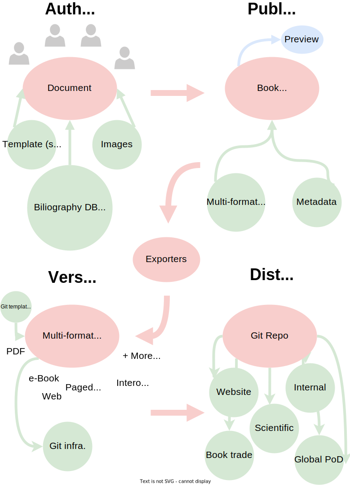
Data model
Digital sovereignty
The term 'digital sovereignty' is used here to describe the steps taken to ensure privacy of personal information and the security of content. Privacy and security are vital because of the encroachment of digital activity by corporations and states, by parties with malicious intent, or through accidental data loss.
To ensure your 'digital sovereignty' we combine data security measures, adherence to privacy legislation such as European General Data Protection Regulation (GDPR), and readiness for privacy legislation of different jurisdictions such as the California Consumer Privacy Act (CCPA), as well as transparency of code and data storage.
The system can be self-hosted, is open-source, has full GDPR compliance, uses two-factor authentication for admin areas, and OAuth authentication for authentication and authorization infrastructure (AAI) integration.
What You'll Need to Get Started
Below are instructions for the steps you'll need to complete before starting work on a 'publishing pipeline' project.
All users will need an email address that can receive emails with URL links that can be used for account verification on the web.
The content below has been ordered by user types:
Publication contributor
Publication manager
Account creation: The instructions below cover default account creation methods. If the listed platforms are using 'Single Sign On' features then authentication can also be made though organization login credentials or platform accounts such GitLab, OAuth services, or using other authentication and authorization infrastructure (AAI)s
Publication contributor
Account creation
Fidus Writer
Fidus Writer has three account creation processes and depending on the specific instance you're using you will have different options:
Invite only
Sign Up
Single Sign On authentication
Invite only: If there is no 'Sign-up' button on website then account creation is through invite only. Please contact the site managers and request an account. If you are approved for an account you will receive an email with instructions for completing the account creation process.
Sign Up: Follow the account creation instructions on the website. Once you have filled in the detail you will receive an email to complete the sign-up process.
Important note: You must verify your account my clicking on the email received in your email inbox and agreeing to the privacy policy to complete the account creation process. If this is not completed your account cannot be created.
Single Sign On: Fidus Writer can be used with authentication credentials from other platforms that use the OAuth protocol. If you have an account with an authentication service listed on the Fidus Writer instance your using you will be able to log in using that account, whether it is your workplace account or another platform account, for example using a GitLab account.
You will be able to see if other platform logins can be used as they will be listed on the Fidus Writer homepage. Below is an example site that uses GitHub and GitLab.
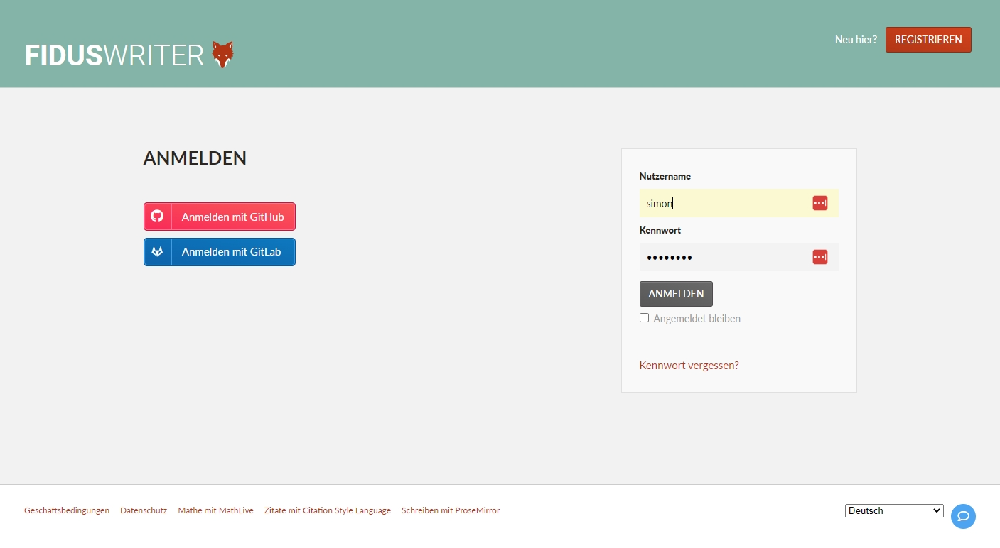
Available social accounts
Publication manager
Account creation
Fidus Writer
See instructions above.
Git
Depending on what Git platform you are using in the 'publishing platform' you will need an account on each one. You may be using more than one Git platform and in that case you will need an account on each individual platform.
Currently: GitLab CE, GitLab.com, and GitHub.com are supported (2022).
GitLab account
The same process is used for GitLab Community Edition (GitLab CE) or for GitLab.com.
The pipeline is about automation of publishing and connects the word processor to directly publish using single source publishing technology and methods.
Single Source Publishing: Edit in one place and distribute as multi-format to different locations automatically to produce professional publication-ready-outputs.
No more sharing files over email
No more confusion over which is the correct document version
No more delays waiting for edits and reviews
No more lengthy delays waiting to get back layouts designs
No more complexity of multi-format publishing tracking down corrections and edits
No more delays in distribution to internal or external channels
Publish as multi-format: PDF; print-on-demand (PoD); web (mobile first); paged web; e-book; interoperable formats - JATS, DOCX, HTML, EPUB, LaTeX, JSON, etc.
Instant automated typesetting and layout design: Reusable templated layouts to typeset multi-format outputs at the press of a button. This means no time-consuming delay for layout designs during production. Instead, the layout designer can make the design templates in advance.
Preview multi-format layouts: Contributors to the publication can be given access to preview the different multi-format outputs.
Co-creation: An online real-time word processor is used, which allows multiple users to work together at the same time. This means authors, editors, reviewers, and designers can all work on one document at the same time.
High quality academic word processor: Features include access to citation databases like EuropePMC, footnotes and citations, citation styles, optional figures and table captioning and lists.
Versioning: Versioned storage is used where edition releases can be made, with all earlier versions being available. Additionally, all edits are stored, so changes can be tracked, audited, and if needed to be reversed. Versioning is recorded with cryptographic IDs for precise editing and validation of document versions.
Automatic distribution: Multi-format outputs can be distributed to internal organization or external locations and channels.
Automatic website creation: Websites can be created automatically for publications and these can be made to be public or private.
GitLab Infrastructure: GitLab Community Edition is used as a self-hosted option for storage of publications. GitLab provides a powerful infrastructure for content processing, distribution, automated tasks, and teamwork.
Semantic by design: From the start of editing the publication content is semantically structured – which is the key to allowing for automation. Additional layers of semantic structuring can be added for adding meaning to document structures, to using Linked Open Data, ontologies, and controlled vocabularies to structure the meaning of the publications content.
Enhanced publications: Modern Open Science publishing offers a number of publication feature enhancements that can be deployed. Persistent identifiers (PIDs) to correctly identify organizations (ROR), persons (ORCID), and documents (DOI). Open licencing ensures reuse if needed. Interoperable formats ensure reuse, discoverability, and portability. Machine readable content and metadata ensures content is FAIR compliant (Findability, Accessibility, Interoperability, and Reusable). Linked Open Data markup to ensure content is structured and reusable in knowledge systems and AI/ML.
Digital sovereignty by design: All aspects of the system take personal data and privacy, and data security into account. These measures include; GDPR compliance; using open source software for code auditing; using secure self-hosting from on-site hosting to designated jurisdiction cloud hosting; as well as secure DevOps procedures.
Four Step Process
Step 1: Make a Publication Git Repository and Website
The Git repository (repo) is the storage location of your outputted publication and which is on the web. A presentation website can also be made from the repo with a selected content being made public. When your repo is updated, so is your website.
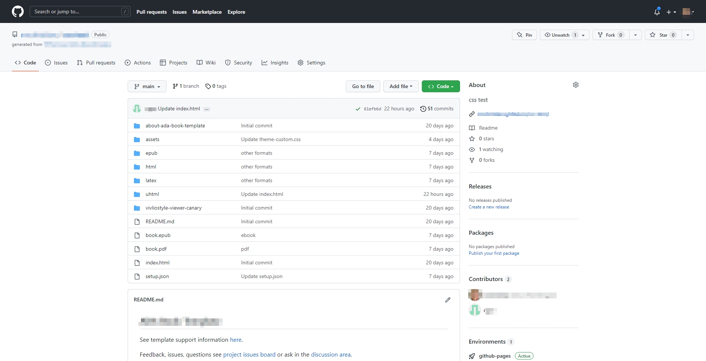
PhotoExample Git repository (repo)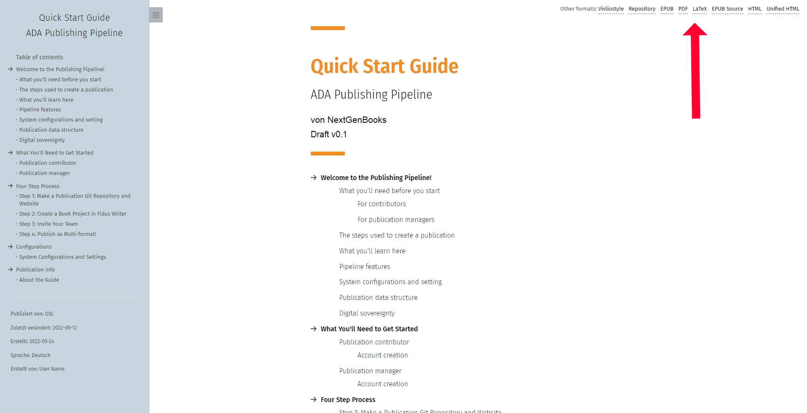
PhotoExample publication website made with GitHub/Lab Pages which is a presentation of the repository above. The arrow shows the links to the other available formats
About Git
The repository uses Git technology which allows for versioning of files and is used to store your publication.
The system has options to use GitLab CE, GitLab.com, or GitHub. GitLab can be used as GitLab.com or as a self-hosted instance for public and private publications, or for staging publications for later transfer to another hosted system, either GitHub or GitLab.com. We use GitLab Community Edition (GitLab CE) for self-hosting which is open-source software. GitHub is not open-source but is useful for publication distribution and visibility.
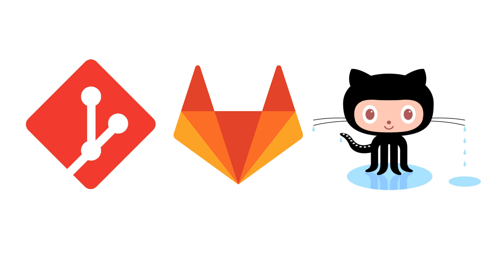
PhotoGit logos - Git; GitLab, and; GitHub
Step-by-step guide
These instructions are for using GitHub. The principles are the same for GitLab.
These steps will allow you to create a repository to for your publication with the option for website creation using Git (Hub/Lab) Pages.
Create a repo
To make your repo we'll use a Template Repository.
You will create a repo which will be prepopulated from the Template Repository for you to later add your publication content. The template repo contains components for creating the website and providing links to the other publication formats which will be displayed as links on the website.
There will be a number of templates to use, and your publication manager can tell you which one to use. As an example here is one on GitHub from the ADA Pipeline which is maintained by the German National Library of Science and Technology (TIB).
Navigate to the template repo link and click the green button 'Use this template'.
PhotoExample template repository. Use template repo to prepopulate your publication repo
Then choose where you will make the new repo and its name. Once chosen click 'Create repository from this template'.
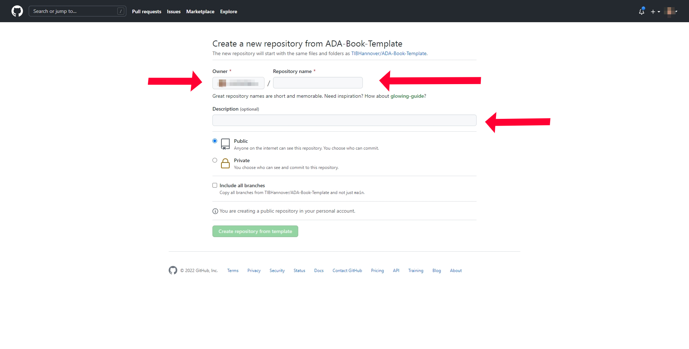
PhotoSet owner (location), name, and description. Then save
Where to save your repo? In GitHub, you can save repos with organizations or in your personal account, select this under the field labelled 'Owner'.
How to name your repo? The name of the repo will be its display name and URL address. It is good practice to adopt a naming convention style to be inline with other publications, this might be a short title, or even an acronym. Note it is good practice to use only lowercase in the name as the URL is case-sensitive. Names can be changed at any time, but it will change any associated URLs.
Note: Repo names can be changed at any time, but this will change the website URL to be the new name, and you must remember to update the URL in other places where you have used the URL address.
Other settings: You can give the repo a description; make the repo public is the default, and then click green button to save.
Congratulations you have now created your repo and have a location to store your publication.
Create a GitHub/Lab Pages website
GitHub has a service called GitHub Pages. This creates free websites on the domain github.io, or you can use your own custom domain. The default URL address pattern is https://organisation-name.github.io/publication-name/. The content from your repo will be available on the website at the URL specified.
Note: Websites can be given custom domain names. You will need to consult GitHub documentation to enable this feature.
This is a two part process.
Part 1: Turn on GitHub/Lab Pages website creation
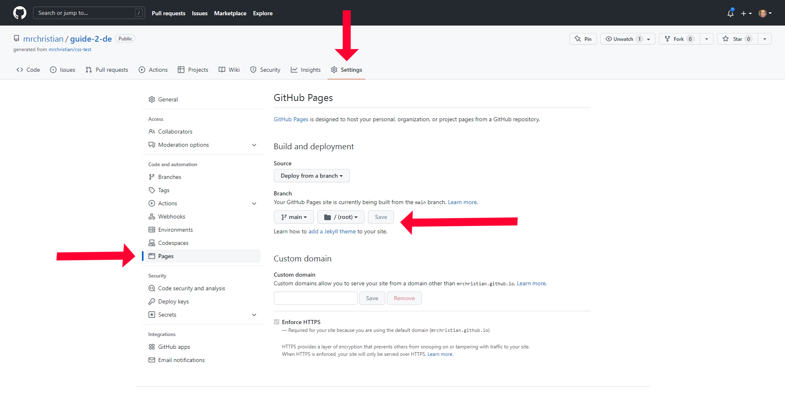
PhotoTurn on pages. Visit Settings tab; Pages left menu item; set to main and root
Navigate to 'Settings' in the top horizontal tab options. In settings on the left menu select 'Pages'. In the dialogue in the main page use the following settings: Select branch - main; select folder - root, and; click save. This will complete the site creation and give you a URL for your website. Copy the URL and you can then use it to add address to front end of the repo.
PhotoCopy the repo name from the top of the page. The name can take a little time to appear
To paste the site name into the front end of your repo first go to the front end of the repo by clicking code in the left-hand side of your repo's horizontal tabs. To the right click the cog next to About and in here you can paste in the URL and save.
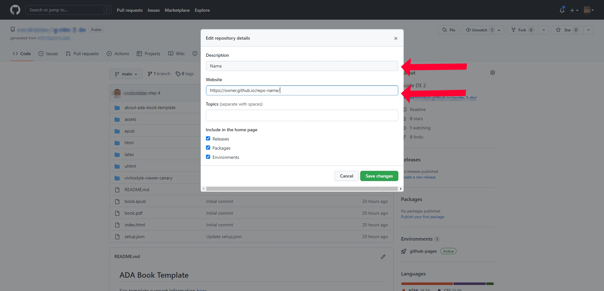
PhotoYou can add publication name and URL address into info box, and it will then appear on front end of repo
You will now have a website and the address appears top right.
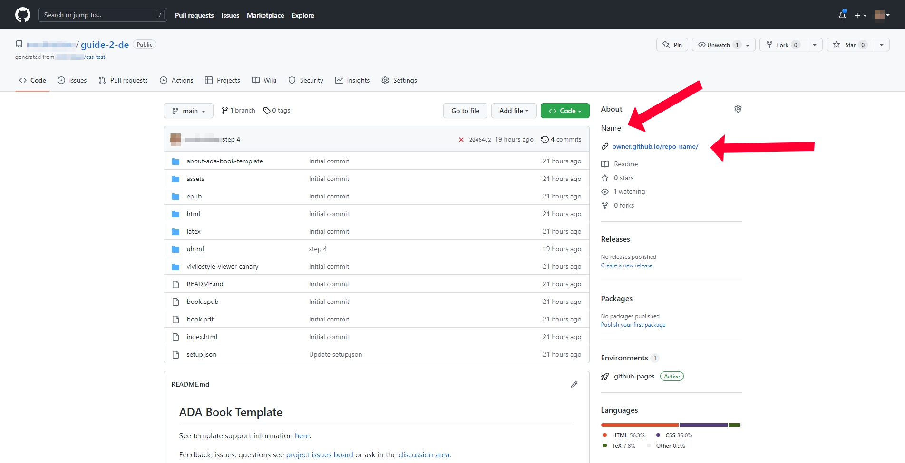
PhotoAfter inputted the name and URL address will appear top right
Your website will look like this. Currently, the site will contain benchmark content to demonstrate that layout features are working correctly. This content will be replaced once you output your publication.
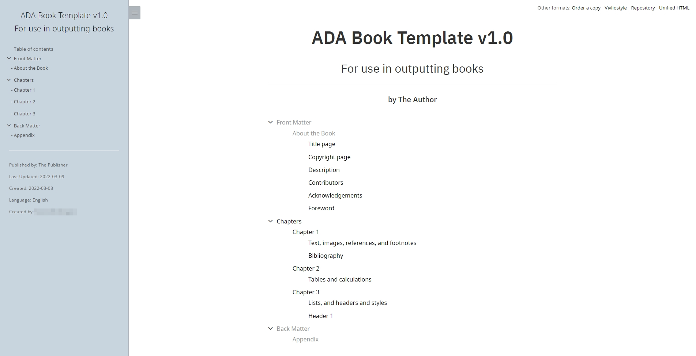
PhotoTo start with your website will have benchmark test content in it from the template. Later when you output from Fidus this will be overwritten
Part 2: Display multi-format content to GitHub/Lab Pages
To enable the Paginated Web version of your publication the repo address needs to be added to the setup.json file in the top level of your repo.
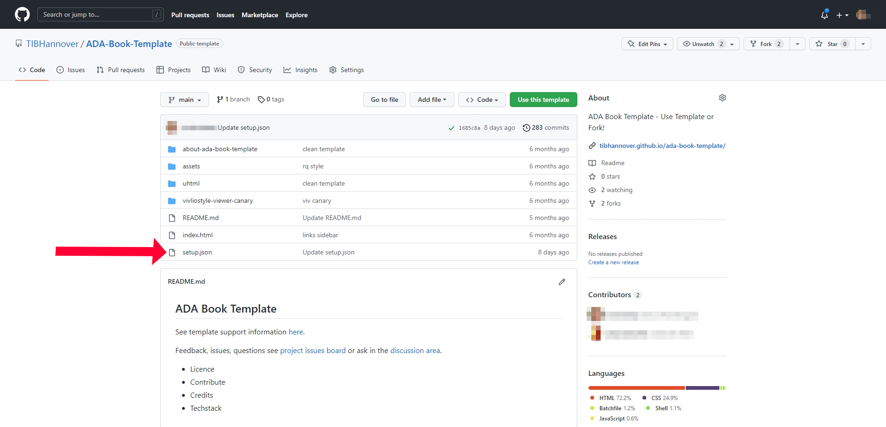
PhotoLocate the file setup.json in your repos top level. Then click on it to view and edit
Edit the file setup.json and add in the organization name and repo name into line 3 and save at the bottom of the page, "repoURL": "https://github.com/organisation-name/publication-name/".
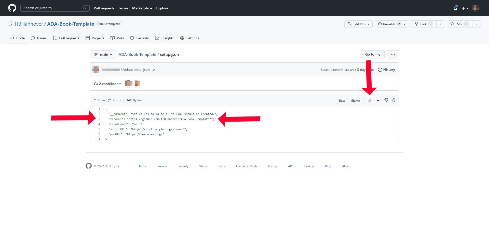
PhotoTo edit click the pencil icon top right. Then edit line 3 and change to your repo address
All steps in your Git setup are now complete.
Step 1 completion: What's next?
Now that you have your repo and website setup, next you will set up a book project in Fidus Writer and connect it to your Git repo, this will allow you to output book files from Fidus Writer to Git.
Git is open-source software that both GitHub and GitLab are built on.
Step 2: Create a Book Project in Fidus Writer
The book project in Fidus Writer will act as an empty container for your publication, later on you can change all the file names and book information to reflect your books title and content. You can also add and remove documents at any time.
What's covered here
Create a 'personal' folder (only you see this - it's not shared) for your book documents.
Make three placeholder documents for your book parts: Front matter; Section 1, and; Back matter.
Add your documents to a Fidus Writer Book - a collation of book documents.
Connecting your book to a Git repo.
In a later step, sharing the publication with your team will be covered.
Complete publication configuration details can be found in the pipeline manual.
1. Create a 'personal' folder
Here you will create a folder and after this create your three documents in the folder. To start with you need to be in the Document area of the website.
At the top of the page in the secondary menu, click on 'Create New Folder' and give the folder a name.
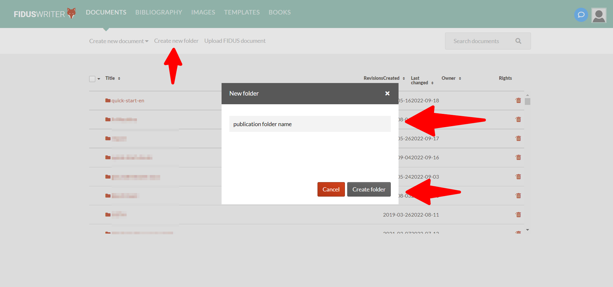
PhotoDocument folder creation - add folder, name, and save
Now you will have an empty folder. If no documents are made in the folder, and it is left empty the folder will not be saved when you navigate away.
2. Create placeholder documents
We will now create three documents in the folder you have just created. These are the placeholder document examples you will make:
Front Matter: Where you will add imprint, contributor information, acknowledgements, etc.
Section 1: A top level part of a book as section or chapter
Back Matter: This can contain appendices, glossaries, or abbreviations, etc.
How to create documents
In the sub-menu below Documents select 'Create new document' and choose 'Book Default' document template. If you are working on a special book or publication series you might use a different document template. Consult the publication manager for guidance.
Note: If you you need to change the document template at a later time you will need to request this change from users aith Admin access as this is a special function.
Here you will add three documents as placeholders. These are added, so you can configure your book basics, names and documents can be changed or deleted later. Make three documents with these name: Front Matter; Section 1, and; Back Matter.
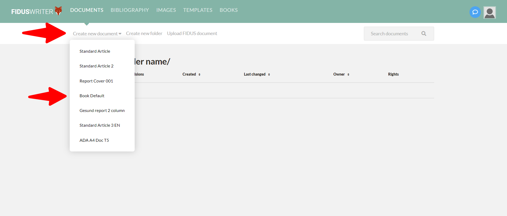
PhotoCreate documents and use a document template
1. Create new document, 2. Select the Document Template, 3. Add document title, 4. Close document from the file menu.
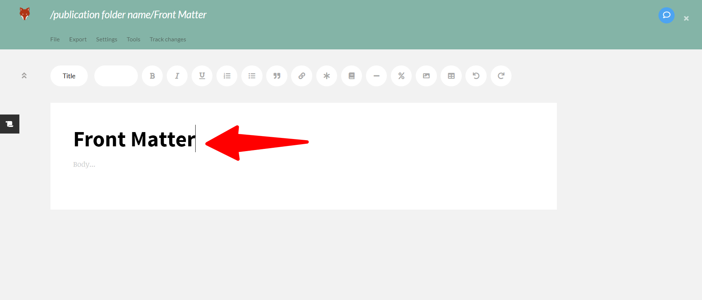
PhotoCreate document and add a title, then close in the file menu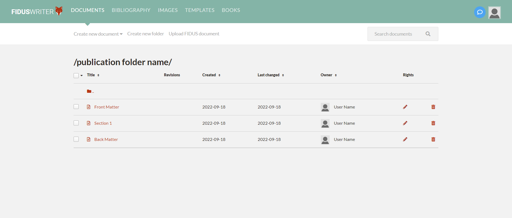
PhotoAdding documents to be used in your book
You now have the basic book sections, and we can move onto creating the Fidus Writer book container.
3. Create a Fidus Writer book
A Fidus Writer Book collects together a series of Fidus Writer documents. Here we will create a book and add your docs that you have just created, as well as carry our some basic configurations of the book.
Navigate to the Book section of the website.
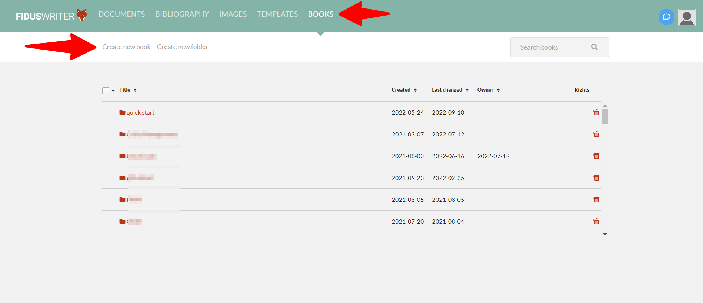
PhotoCreate a Fidus Writer Book. Navigate to the book section, use create book on the left
Click 'Create new book'. You will be show a book dialogue box with a number of tabs: Basic information, Sections, Bibliography, Epub, Print / PDF, Validation, and Git repo.B
To start with you will only complete a few settings, you can return later to complete all of the book setup. Here we will fill out the title and add your documents.
1. Insert the book title in the Basic info tab.
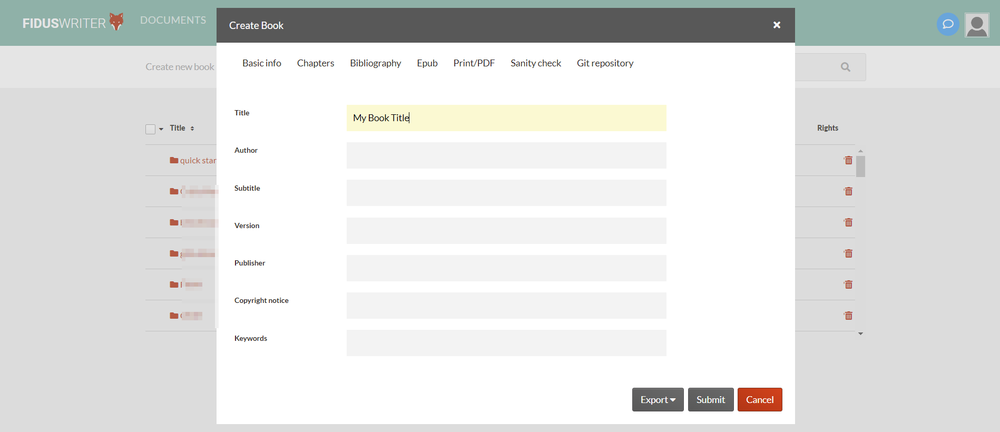
PhotoAdd book information, add book title to start with
2. Add documents. To add your documents move to the 'Sections' tab. Here you will see your Documents listed on the left, at the top your newly created 'folder'. Click the folder to display its contents. You can add your documents to the book by selecting them and clicking on the arrow in the middle to add them to the right column. Now save your book. The dialogue box will now close, and you will see your book listed in the Book section of the site.
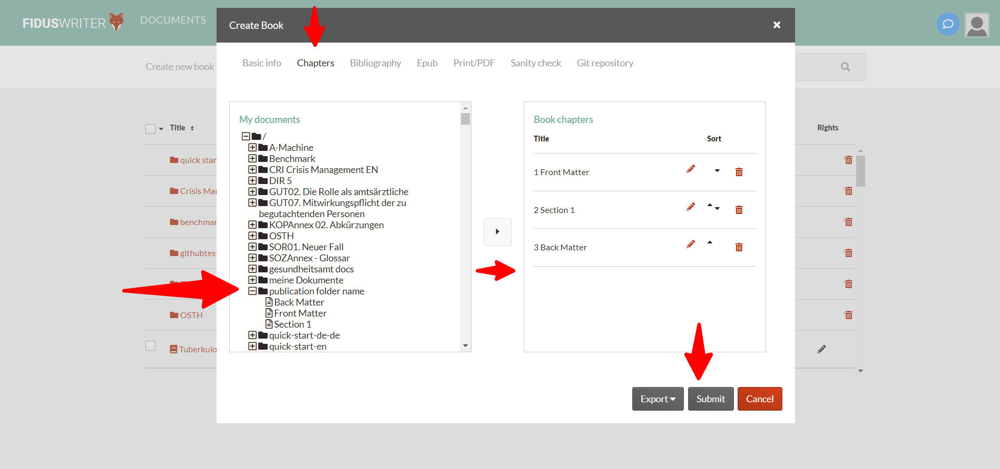
PhotoSelect Chapters tab, add documents from your folder - left to te right column to be in your book. Then save
You can return later to complete all the book settings.
Your book is now ready to be connected to Git for outputting.
4. Connecting your Fidus Book to a Git repo
This part of the process only needs to be carried out by publication managers or users who will be outputting to Git. If the Git repo is public then any user will be able to see the saved content without any login credentials. Repos can be made private or access only given to specific users or groups of users.
You need to have created your Git repo in advance which is covered in Step 1., of the guide, this will repo will be where you output your publication files too.
First we will connect Fidus Writer with the Git instance you are using, this is done by authorizing Git to connect with Fidus Writer using you user accounts on both systems.
Connect platforms
1. Make sure you are logged into Git and Fidus Writer.
2. From the Fidus Writer homepage navigate to your user profile at the top right and click on your username, this will take you to your user profile page where you can connect with your Git instance in the 'social accounts area'.
3. Click Connect next to the Git instance you want to connect to.
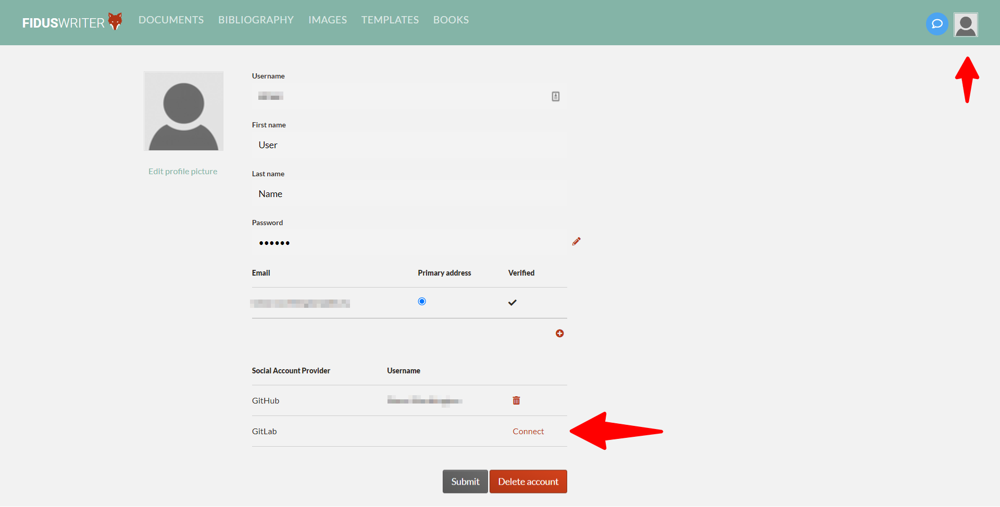
PhotoConnect to Git
4. You will now be redirected to the Git website, you will need to log in if you haven't already done so.
5. Then accept the authorization. This process connects your user accounts and allows the two systems to transfer your publication files.
The connection process is now complete, and we will now select the repo for your book.
Select repo
1. Navigate to your book and click on it to open the book dialogue box. Click on the Git repository tab on the right.
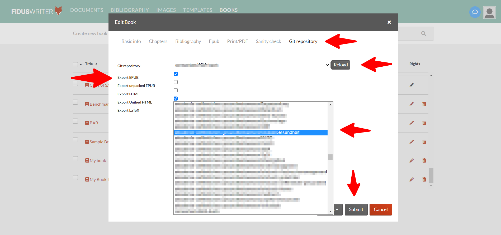
PhotoSelect repo to use and save. Reload if repo you want is not available
2. Click 'Refresh' on the right to get your list of repos from Git. The repos will now be available in the drop-down menu.
3. Select your repo from the list, then below the output types you need should be checked, and click save. Export format options are: EPUB export, Unpacked EPUB export, HTML export, Export Unified HTML, LaTeX export. As default, you only require EPUB and Unified HTML. PDF will be uploaded manually - instructions are in the output your book as multi-format section.
4. You can now export your book to Git. In the Git repository tab use the export button bottom right and select 'Export to Git repository'. A dialogue will appear asking for a Commit message, this is a note for this revision export.
A message dialogue will appear bottom right. When the message 'Your Book has been successfully saved to Git' appears the process has finished.
PhotoGit export message - see bottom right-hand corner
You can now navigate to Git and you will see your files on Git. That is the end of this process.
PhotoYour publication outputted to Git
Next steps
You can now invite your team to access the publication on Fidus Writer.
Step 3: Invite Your Team
This section is intended for publication managers.
You can invite contributors to your publication project and give them access to project documents and book.
Note: This setup is so that contributors can edit documents and preview the book publication as PDF, e-book, etc., without being able to export the publication to Git, or change other configurations of a book, such as: change the order of sections (chapters), or edit other book information and settings.
If your team does not yet have accounts yet then see the guide section 'What You'll Need to Get Started' to add them as users to the system.
For contributors access to a publication is a three part process:
First, the user has to accept being a contact of yours.
Second, you grant document editing access, and
Third, you give view-only access to the book so that users can download previews.
Team members can also be given access for different roles, for example as reviewers or editors:
Reviewer with commenting only on documents, and;
Editor with track changes only permissions on documents.
Settings for these roles are described at the end of the section.
1. Adding users as contacts
Each user in Fidus Writer has contacts. First a user has to be a contact before they can be invited and given access to your documents or books.
In the homepage of Fidus Writer navigate to your user icon top right and from the drop-down menu select Contacts.
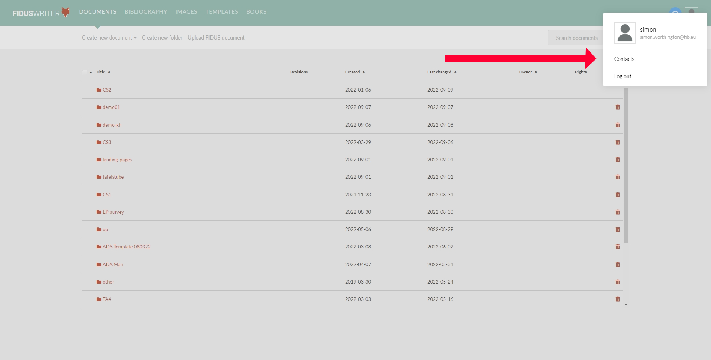
PhotoAdd contacts - top right
You will see an empty page if you have no contacts yet or otherwise a list of contacts.
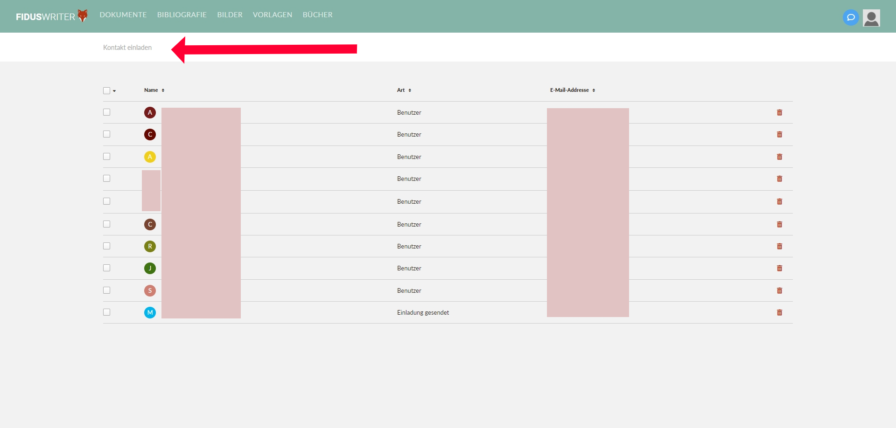
PhotoInvite contact - top left. List of contacts
Click Invite contact top left, you can add contacts here by username or email address. Each contact added will be notified about your contact request and will need to approve the request.
If the person does not yet have a Fidus Writer account you will need to use their email address, and then they will be invited to create an account.
PhotoInvite user dialogue box. Add email address or username to invite user
The user will get a notice in Fidus Writer and as email about the contact request, and then they need to accept the request. If the user is logged in to Fidus Writer the notice will come up as a pop-up request for them to click through to contacts. Also, they can always visit their contact areas to check on your request.
You can see the status of your invite for a contact in your contacts view area. The status of an invitation is notes as User if the invite has been accepted.
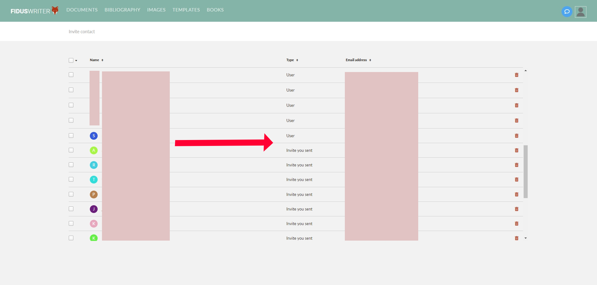
PhotoThe status of an invitation is notes as User if the invite has been accepted
If you have problem adding contact then get in touch with administration support, and they can help check on the status of invites. All personal information is used in strict adherence to GDPR and principles of Digital Sovereignty where users always have to grant explicit access to their personal data.
2. Giving users access to edit documents
Note: As creator of documents you become the document owner. There can only be one document owner. Only the owner of a document can edit the sharing settings. Users that you invite will be able to edit all parts of a document including deleting documents as we are giving the Write access to documents. You can also set their access to being: Write tracked (track changes); Comment, or; Read (read only).
Navigate to the Fidus Writer home and the documents area and from there into the directory you made in the earlier step in the guide. Here you will see a list of your publication documents.
PhotoPublication documents
In the directory select the top checkboxes above all the document checkboxes this will turn on and off (toggle) the selection of all the documents, then click the drop-down arrow icon and select 'Share' from the drop-menu.
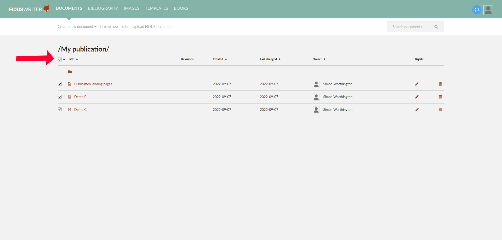
PhotoSelect all docs by checking checkbox above documents. Note sharing drop-down is from down arrow to the right of the checkbox
You will now see the share dialogue box. Add users by moving them from the left to the right column and edit icon next to each user and change it from the view (eye icon) to edit (pencil icon) to give them full edit access, otherwise they will only be able to view documents. And then save your sharing settings.
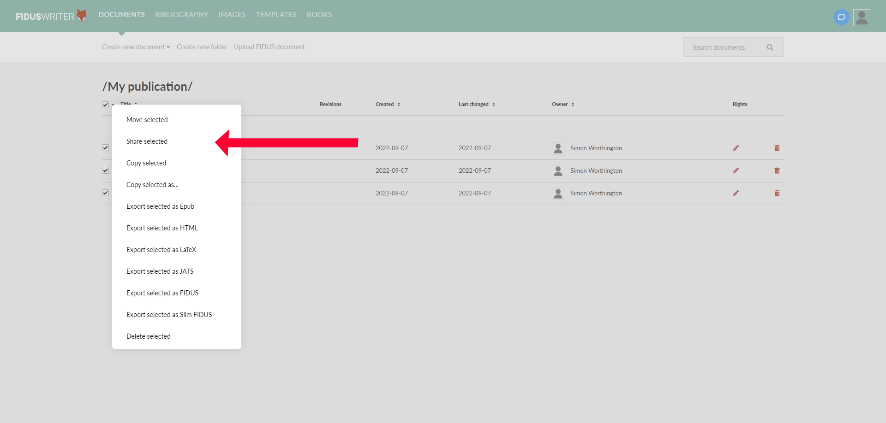
PhotoSelect Share menu item from Drop-down document menu
The sharing task for documents is now complete.
If you add a new user or new document - then repeat parts 1. and 2., to enable sharing.
3. Sharing your book for view only and preview download
You want your contributors to be able to view the book settings and preview the complete book in its different typeset layout formats, but prevent them from publishing the book or directly rearranging book sections or selecting a new layout typesetting style, etc.
In this part we will share the book with the same users as before in documents, but with the permissions as view only.
1. Navigate to the book site area of Fidus Writer and locate your book.
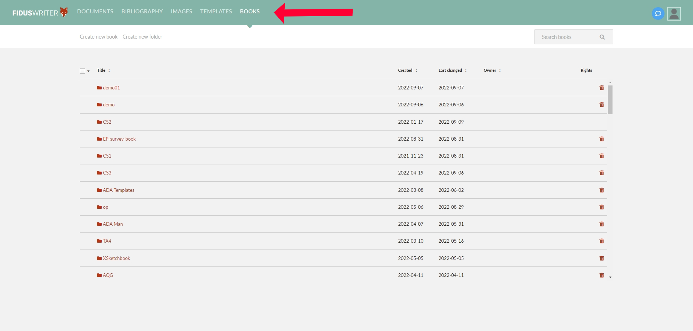
PhotoBook site area
2. To the right of your book click the pencil icon. This will bring up the sharing dialogue box. As before with sharing documents move the users from the left column to the right column to share the document with them. The difference this time is that we're going to leave the users as view only (eye icon).
Once you have completed this part the sharing setup in total is now completed.
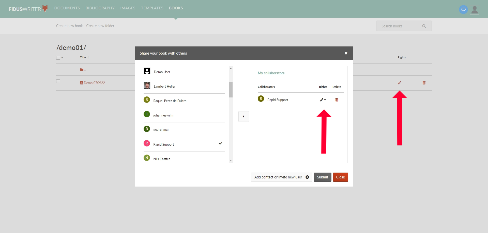
PhotoShare your publication. Edit pencil icon to right of book, then in book dialogue box more users to right column and set to edit (pencil icon)
Adding reviewer and editors to documents
For documents, you have the option to set a users access rights as view only, comment only, or as track changes only.
These setting are useful for reviewers and editors.
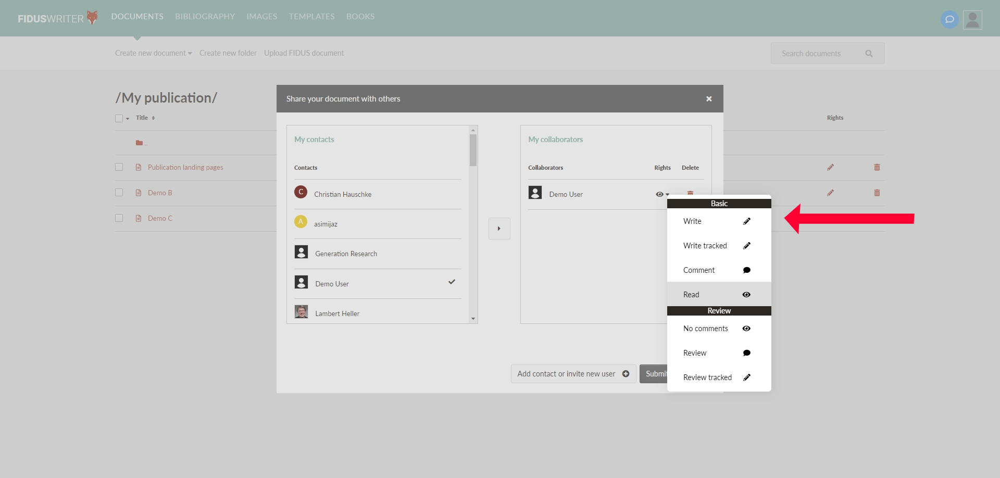
PhotoDocument sharing options for contributors and reviewers (Basic: write, write tracked, comments, read. Review: no comments, review, review tracked.)
Basic (contributors)
Write
Write tracked
Comment
Read
Review
No comments
Review
Review tracked
Next steps
Next we will look at outputting your publication to Git. This will be the fourth and final step in this guide for your publication workflow.
Step 4: Publish as Multi-format !
Here you will learn how to do the following: Output your publication as a website, pages website, PDF, and e-Book.
First the system can create many outputs from one source as 'Publication Ready Outputs' (PROs), as well as output additional interoperable and machine readable formats.
The system can apply pre-made reusable templates of 'layout design styles' with automate machine typesetting.
Save styled output formats to Git at the push of a button, or preview the outputs direct from the system. Note: the PDF format needs to be saved locally and then uploaded to Git (this will be automated in the near future, Sept 2022).
Output formats we'll cover here
Website (responsive for mobile viewing)
Paginated Web (this means you have pages like a book in the browser as opposed to the default single scrolling page of a browser)
PDF
Print-on-demand (PDF)
e-Book
Other format outputs are listed in the System Configurations and Settings section.
TableStarter output formats. More formats are available but to start with we'll cover the set below.
Print from one copy at a time. (recto - verso margins)
Use on e-Readers and distribute through book trade.
Running header / footer
Placed in left menu
yes
yes
yes
n /a
Date (custom formats)
Placed in left menu
yes
yes
yes
Inline
Version (From Fidus book version No.)
Place in left menu
yes
yes
Inline
Fidus exports used to make output formats.
UHTML
UHTML
PDF
PDF + Cover PDF (made separately)
EPUB
Preview outputs
You can download any of your outputs locally from the book dialogues window. In the Export button bottom right you will a menu with the following export options:
EPUB
HTML
UHTML
LaTeX
Print / PDF (Select in your browsers Print dialogue box if you want to Print or Save as PDF. IMPORTANT!Keep background graphics on, and margins set as none!)
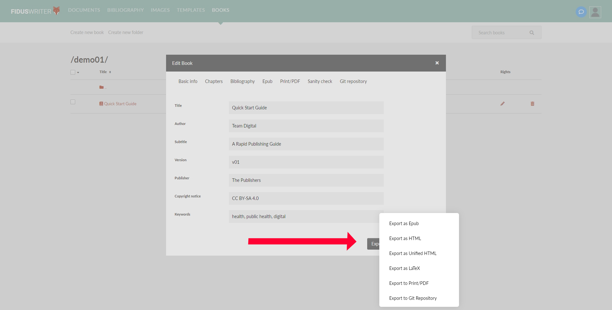
PhotoExport book for preview
Applying layout design styles and Git export
Choose multi-format style
1. Navigate to the book area of the site and here click on your book to open its dialogue box.
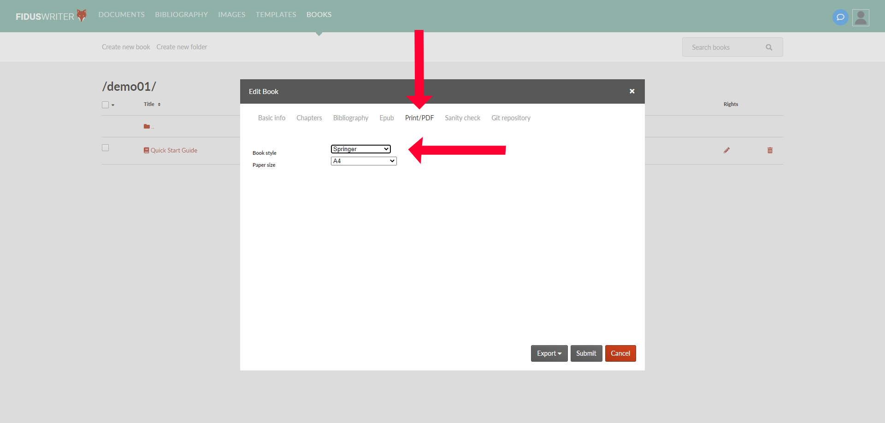
PhotoSelect a book layout style
2. Choose your book 'layout design style' from the 'Print / PDF' tab. As an example your can use 'Report 001' for an DIN A4 orientated layout style. Selecting a style will typeset all your outputs, and you can change style at any time, or add, and modify styles.
Add an e-book cover
Note: The e-book cover is only used for e-book outputs. The cover used for PDF, Paginated Web, and website are generated from the Book Style (CSS styling). Creating and editing book styles and and document styles is covered in the Pipeline Admin Manual.
For your e-book you will need to add cover artwork in the Epub tab of your book information. You can upload a image file here. The artwork can be from the cover of your PDF or from any other source. Use a JPEG file at a size of 2560 pixel x 1600 pixel or close to this. E-book platforms request different sizes, here we have used Amazon Kindle sizes as of January 2022.
Tip: Take the first page of your PDF output and use it as your cover. Render the PDF page 1 in a graphics program and save it as a JP'EG. For example using the open source image editor GIMP (GNU Image Manipulation Program).
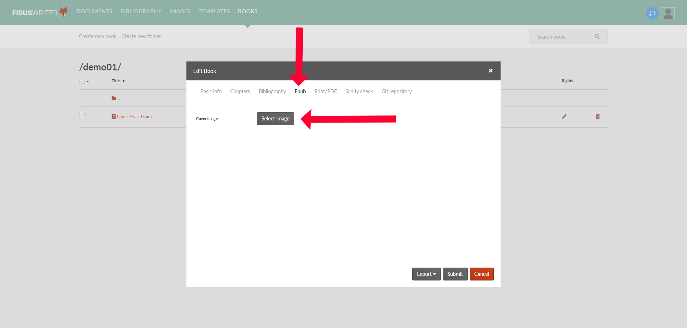
PhotoAdd an e-book cover
You can preview your e-book on your local machine using the open source Calibre e-reader.
Export to Git
Note: If your Git repo is public this will make your book public. Repos can be made public or private.
1. In the book dialogue box select the tab on the right Git repository.
2. In the Git repository tab select the following: the repository you want to save to (this will already be selected if you used the earlier guide setup); the output formats you want to use, and then from the export button bottom right select 'Export to Git repository'.
3. A Git dialogue will now appear called 'Commit message'. This is a note about the export you will make to Git, and it will appear in the file listing for this git export. The purpose of the note is to inform other team members or Git users about your export, for example what kind of updates were made. A Commit message should be informative, and you can pick your own style, noting these may be public if the Git repo is public.
Click save, and the export will start. The system will give you updates on the progress bottom right.
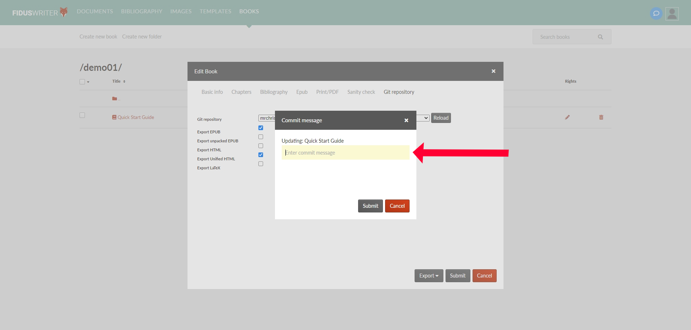
PhotoAdd your Git 'commit message'. This is a note for others to know what was being saved to Git
4. You can now save your book settings in the book dialogue box.
5. Your export is now complete, and your publication will now be on Git.
PhotoGit Repo view. After you have exported your publication you will see the files herePhotoGit Pages. This is the website portal to your publication
From the Git export you can either have the Git content be public or private. Additionally, you can manually or automatically have content distributed to other storage locations or systems. These are both settings and configurations that are made in Git. See the full manual for these instructions.
Exporting PDF to Git
PDF outputs need to be saved locally and then uploaded to Git.
Here we will create our local PDF from the browser, save it locally and then log onto Git in the browser and upload the PDF.
1. In the book dialogue box select print/pdf export from the lower right export button.
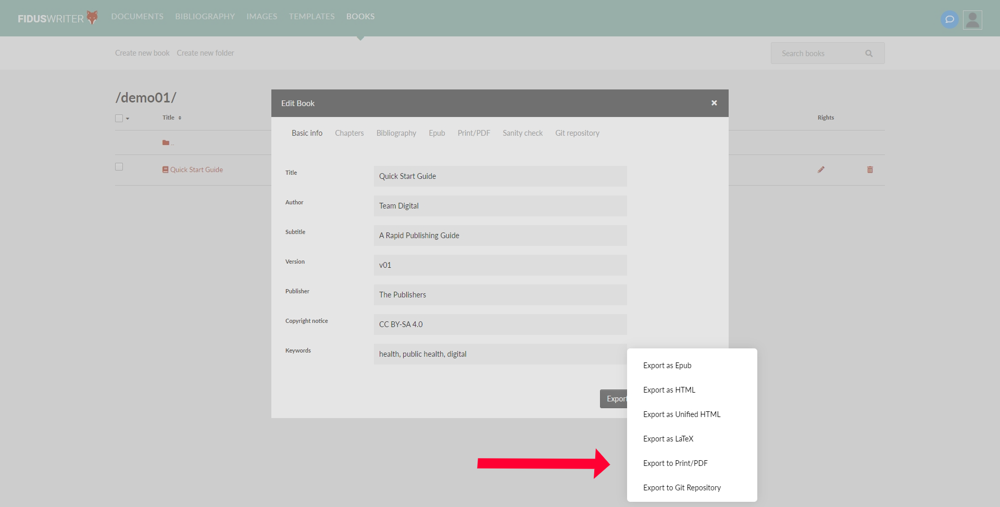
PhotoPDF export from book dialogue box
2. Now we will have your browser Print / PDF export dialogue box appear and there are some settings that need to be checked before we save the PDF file to your computer.
a. Set output as PDF.
b. Set margin to none.
c. Have included background graphics checked as on.
Now click save and name the PDF 'book.pdf'.It is important to use the naming 'book.pdf' as Git then recognizes the PDF and adds it to the website it makes with Git Pages. Save the file locally.
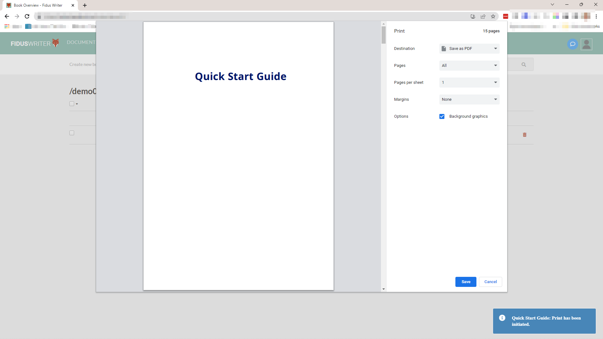
PhotoPrint and PDF setting and save
3. Now upload the file to Git. Navigate to your repo in your browser, log into Git.
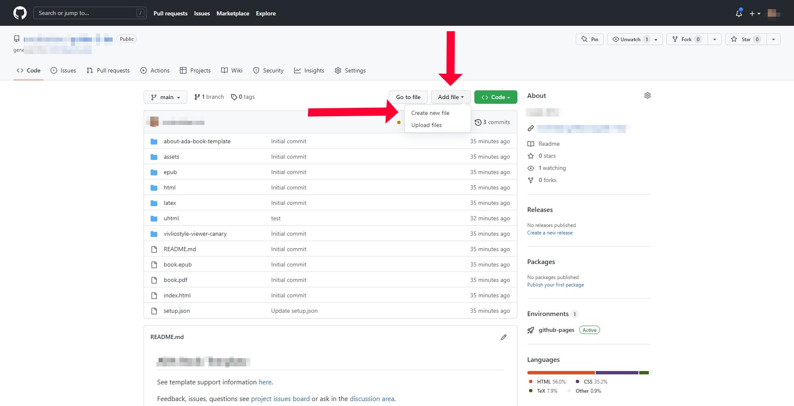
PhotoUpload your PDF to the repo
Now you are at your repo's top level view you can upload the book.pdf file. Click add file top right, select your book.pdf file, add a 'commit message', and click upload. Your book.pdf file need to be in the top level of your repo. See the screenshot below.
The process is now complete, and shortly the PDF will appear in your website top right menu.
PhotoAll formats are listed top right
Multi-format publishing configurations
You can output as wide variety of Publication Ready Output formats as well as interoperable formats for a number of different uses, as well as the main source files from Fidus Writer as JSON files.
To read more about other formats and advanced settings see the full manual.
Recommended minimum default output to Git
Outputting a website, paginated web version, and PDF, and e-Book will be enough for readers. For this setting choose: UHTML, PDF as output types in the Git settings, and you will have all you need for these outputs.
Creating print-on-demand publications
The full process for print-on-demand (PoD) outputs is outside the scope of this guide, but here is an outline of the steps involved.
As an introduction to PoD this is a print process where you can deposit your book with a printer who will make the book available to customers worldwide on the web via book retail websites and when the customer orders a book it is printed as an individual copy locally and shipped to them. As the publisher you do not have to pay for the printing or shipping, instead this is deducted form the customer payment. As the publisher you are compensated for the sale, minus the book costs. You can also make your own bulk orders as the wholesale print cost.
Ingram services Lightning Source and Ingram Spark are good examples of PoD services.
PoD can also be used for private publication only used internally too.
You will need an ISBN number to distribute the publication. You do not need an ISBN if you use PoD for private orders with books you do not publicly distribute.
Steps to enable Print-on-demand
Create an account with a PoD provider like Ingram Lightning Source for professional PoD or Ingram Spark for one-off self-publishing.
Make a book cover and upload your book block made in the PoD system. PoD covers need to have a front, spine, and back cover, and have a spine that vary in size depending on number of pages.
Set the sales price. The price can allow a surplus, or be set to break even, or even be subsidized.
Publish. Your book will then go live on many retailers, and you are compensated for sales monthly.
A Publication Ready Output (PRO) means that the format is ready for professional publishing, including typesetting, metadata, and other formatting and settings. Many systems can save files in a format, for example as HTML, or PDF - but it does not mean it can be used professionally. Microsoft Word can save as HTML or PDF but it doesn't make the formatted files into finished publications ready for distribution.
UHTML - This stands for unified HTML. The Fidus exporter concatenates all the Document HTML files into one single HTML file.
Cover PDF. Covers for print-on-demand (PoD) need to be made separately at present due to different requirements made by PoD printers.
Publication Info
About the Guide
Quick Start Guide – A Publishing Pipeline
Pre-release v0.1
Date: 2022
Creative Commons Attribution-ShareAlike 4.0 International (CC BY-SA 4.0).
Description
The pipeline is about automation of publishing and connects the word processor to directly publish using single source publishing technology and methods.
Single Source Publishing: Edit in one place and distribute as multi-format to different locations automatically to produce professional publication-ready-outputs.
The pipeline connects Fidus Writer an online word processor with GitLab or GitHub for versioned storage.
Publication layout design style 'Report 001' is based on CSS Template from Interpunct – full stack graphic design,Interpunct.dev. GNU General Public License (GPLv3).
Logo - Source Sans Pro. These fonts are licensed under the Open Font License. Source® Sans Pro, Adobe's first open source typeface family, was designed by Paul D. Hunt.
Automatic typesetting – The use of heuristic machine rules to typeset a publication.
Creative Commons Licence – A Creative Commons (CC) license is one of several public copyright licenses that enable the free distribution of an otherwise copyrighted "work".
Git cryptographic ID – A way of giving a unique identifier using Git Commit ID (SHA) to content stored using Git.
Digital Sovereignty – Digital Sovereignty is the degree of control an individual, organization or government has over the data they generate and work with on local or online platforms.
DOI – A DOI (Digital Object Identifier) is a unique and never-changing string assigned to online publication and their subcomponents - chapters, images, videos, etc.
FAIR / FAIR Data – FAIR data are data which meet principles of findability, accessibility, interoperability, and reusability (FAIR).
Fidus Writer – Fidus Writer is an online collaborative editor especially made for academics who need to use citations and/or formulas.
Git – Git is a free and open source 'distributed version control system'. A distributed version control is a form of version control (management of changes) in which the complete codebase, including its full history, is mirrored on every developer's computer.
GitHub – GitHub is an Internet hosting service for software development and version control using Git.
GitHub Pages – GitHub Pages is a static web hosting service.
GitLab – GitLab is an open source Internet hosting service for software development and version control using Git.
GitLab Pages – GitLab Pages is a static web hosting service to publish from a repository in GitLab.
Linked Open Data – Linked Open Data is a set of design principles for sharing open machine-readable interlinked data on the Web.
Multiformat publishing – Publishing as formats such as print, PDF, web, e-book. Multi-format publishing has to take into account the limitations of each format, e.g., can the format support tables, video, or hyperlinks. Other considerations are related to navigation and presentation, e.g., formats like the web tend not to be paginated which alters the use of citation of a printed page number. Lastly each format has specific metadata considerations and distribution channels.
Open access – Open Access is a convention in academic publishing to make publications freely accessible.
Open data – Open data is data that is openly accessible, exploitable, editable and shared by anyone for any purpose, even commercially. Open data is licensed under an open license.
Open science – Open science is the movement to make scientific research (including publications, data, physical samples, and software) and its dissemination accessible to all levels of society, amateur or professional.
Open source software – Open-source software (OSS) is computer software that is released under a license in which the copyright holder grants users the rights to use, study, change, and distribute the software and its source code to anyone and for any purpose.
ORCID – ORCID (Open Researcher and Contributor ID) is a nonproprietary alphanumeric code to uniquely identify authors and contributors of scholarly communication. ORCID is a persistent identifier.
Paginated web (Paged Web) – Paginated web is the presentation of web pages as sequences of pages in the form of a codex or book.
Persistent identifier (PID) – A persistent identifier is a long-lasting reference to a document, file, web page, or other object.
Publication Ready Outputs – A Publication Ready Output (PRO) means that the format is ready for professional publishing, including typesetting, metadata, and other formatting and settings. Many systems can save files in a format, for example as HTML, or PDF - but it does not mean it can be used professionally. Microsoft Word can save as HTML or PDF, but it doesn't make the formatted files into finished publications ready for distribution.
Repository / Repo (Git Repo) – Repositories in GIT contain a collection of files of various different versions of a Project. These files are imported from the repository into the local server of the user for further updates and modifications in the content of the file. A VCS or the Version Control System is used to create these versions and store them in a specific place termed a repository.
ROR – ROR is a community-led project to develop an open, sustainable, usable, and unique identifier for every research organization in the world. ROR is a persistent identifier (PID).
Single Source Publishing – Single-source publishing is a content management method which allows the same source content to be used across different forms of media and more than one time.
Versioning (Git) – Version control, the management of changes to documents, computer programs, large websites, and other collections of information
Vivliostyle (CSS Typesetting) – An open source project for a new typesetting system fitting for digital and web publishing based on the latest web standard technology.